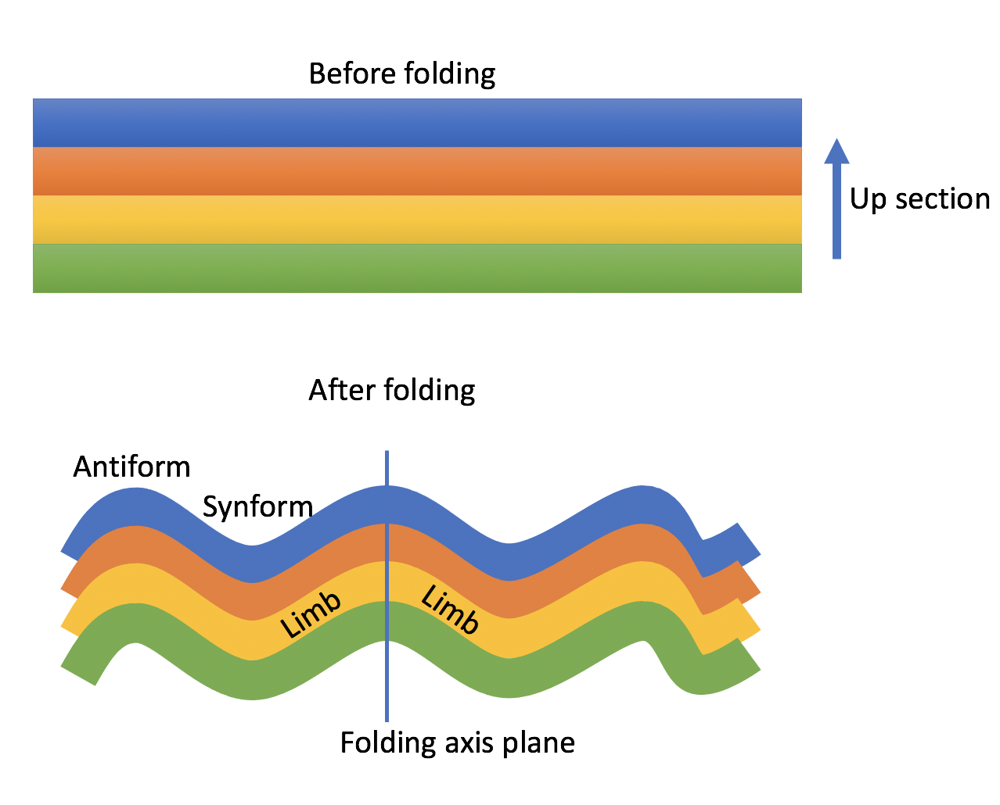

11.2 Folds - structural geology¶
Outline:
Folds
Measuring strike and dip of a plane
Stereonets
Additional Assigned Reading¶
Physical Geology – 2nd Edition, By Steven Earle Chapter 12 Geologic Structures focusing in particular on Chapter 12.2 Folding and Chapter 12.4 Measuring Geological Structures.
Geologic Model Activity¶
Go to Visible Geology and play around with it! Start by clicking “Visualize” then follow the prompts to add geologic beds, folds, tilts, topography. Reset and start-over a few times to build some structural geology intuition.
Folds¶
When rocks are squeezed by tectonic stresses they will either bend or break depending on their material properties (e.g. composition) and temperature and pressure conditions. We have already learned about brittle ruptures i.e. earthquakes. Now let’s cover folding.
Folding terminalogy:
Folding axis - the plane that cuts through the crest of the fold
Folding limbs - the tilted beds on either side of the folding axial plane
Syncline or synform - a upward fold
Anticline or antiform - an downward fold

A cartoon cross section of folded beds.
Studying the direction and extent of folding help structural geologists estimate the regional tectonic stresses.
Measuring strike and dip¶
Strike and dip are two measurements used to describe the orientation of a plane, such as the limb of a fold. Strike is measured from a horizontal line that lies in the plane, it is the direction in degrees from north (like azimuth which we covered) of the horizontal line. Strike is measured with a compass. Dip is the angle from horizontal that the plane is tilted, and it is measured with an clinometer. Strike and dip are plotted on maps as a “T” shape that points along strike and down slope.
A cartoon cross section of folded beds, which also shows the surface and a strike and dip of one of the fold limbs.
Watch this video about measureing strike and dip:

Plotting planes and lines on a stereonet¶
Stereonets are a 2D graphical representation of the orientiation of lines and planes in 3D. On a stereonet a plane will appear as a line, and a line as a point. The strike is depicted as the angle clockwise from north that the line meets the edge of the plot. The dip is depicted as the distance of the line from the edge. Lines close the edge are close to horizontal and lines near the center are nearly vertical. The way to visualize this is a stereonet is the 2D projection of looking down at the plane in a hemsphere:
The “pole to a plane” is a line the is perpandicular to the plane. So it will plot 90 degrees away.
import matplotlib.pyplot as plt
import mplstereonet
fig = plt.figure()
ax = fig.add_subplot(111, projection='stereonet')
strike, dip = 110, 30
ax.plane(strike, dip, 'g-', linewidth=2)
ax.pole(strike, dip, 'g^', markersize=10)
ax.grid()
ax.legend(['Plane','Pole'])
plt.show()